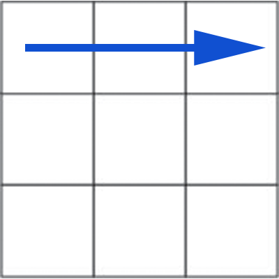
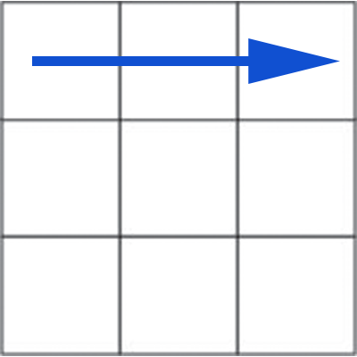
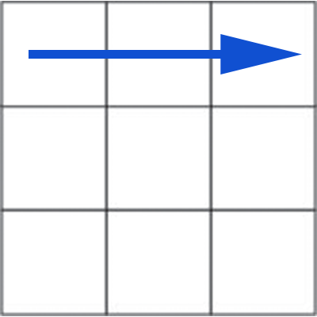

Flipping an Edge
This algorithm will flip the edge that is located in the top middle of the front face.
 



F U' R U
We are going to start by creating a cross. We will place our chosen color's face on top. Next, to create the first cross, we need to find an edge piece. We want to line these up so that it creates a cross in our chosen face where each line connects to the correct color.
This algorithm will flip the edge that is located in the top middle of the front face.

F U' R U